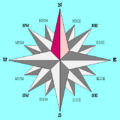

EDIT mapViewer [prototype]
- Google & Yahoo
-
- Projection Options
- Printing options
- Layers
-
- TDWG layers
- Natural features
- Quadricule layers (degree grids)
- UTM grids
- Administrative layers
- Africa
- Antartica
- Asia
- Central America
- East Europe
- West Europe
- North America
- South America
- Oceania
- high resolution layers
- Background layers
- Transparent background
- NASA JPL data
- Remote WMS layers
-
- GBIF data
- Your projects
-
Upload your project
- Upload your CSV data!
-
create new dataset
add to the current data
- Your Point Data
-
-
Show/hide
-
Show/hide
-
Show/hide
- Other tools
- Spatial analysis
-
- Interactive analysis tools
-
Click here, wait the layer to appear on the map and hover the desired polygon
Polygon code: Number of records Number of genera Taxa/record - Add/Remove modules
- Videos&Contact

Spatial Analysis (you can click and drag me)
Query results (you can click and drag me)
